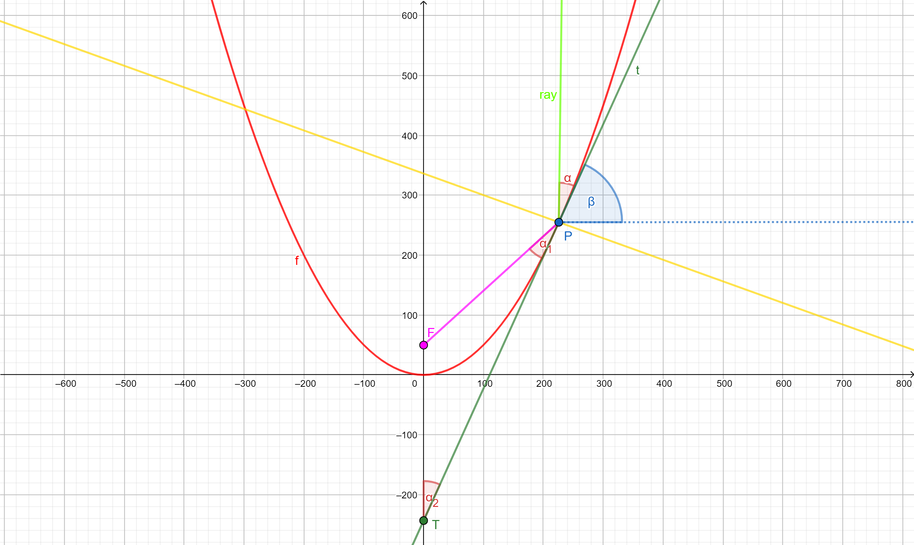

DCS - 2.2 Properties of conics
Parabola
The following illustration pretends to show the reflection property of the parabola. The curve below (in red) represents a parabola whose axis of symmetry is the vertical line X = 0.
The curve can be described in terms of the following explicit equation (note that for this particular case, the 'a' parameter is setted to 1/200, so the parabola is opening to the top):

&space;=&space;ax^{2} "f(x) = ax^{2}")
As you can observe, there appears 10 different vertical rays that intersects the parabola in 10 different points, but all of them are reflected into the same point, the focus of the parabola.
We will now find the coordinates of the focus and we will try to give a geometric argument in order to justify the above illustrated property. Let's go there!
Computing the focus of the parabola
We are going to make an informal prove of the reflection property of the parabola, which stands that all rays parallel to the axis of symmetry of the parabola are reflected into the same point: the focus of the parabola.
Without loss of generality, let's assume that the axis of symmetry of our parabola is X=0. Let's consider a ray that intersects our parabola, which is defined by f(x)=ax2, in a point P=(x0,y0), as in the below diagram.
Let's consider a line tangent to the parabola in the point P (named 't'). Notice that it is described by the following equation:

where at (the slope of the line) is simply the derivative of f(x) at x0, which is just: f'(x0)=2ax0.
We know, as a previous result, that when a ray is reflected from a surface, the angle of incidence (α) is always equal to the angle of reflection, where both angles are measured from the path of the ray to the normal to the surface (in yellow) at the point at which the ray strikes the surface (Law of Reflection). This result implies that the focus can be obtained by finding the equation of the reflected line, that goes from P to the axis of symmetry (in F).

Let's find an equation for the reflection line, yr! It has, again, the form:

Observe that the slope angle of the curve is just β, so you can obtain a_r by computing tan(β). By inspecting the triangle FTP, one can easily see that: 2·α + 90º + β = 180º, which means that:
&space;=&space;tan(90^{\circ}-2\alpha) "tan(\beta) = tan(90^{\circ}-2\alpha)")
Note that
&space;=&space;-cot(2\alpha) "tan(\alpha-90^{\circ}) = -cot(2\alpha)") ,
which implies that
,
which implies that
&space;=&space;1/tan(2\alpha) "tan(\beta) = 1/tan(2\alpha)") .
Also note that
.
Also note that
&space;=&space;2tan(\alpha)/1-tan^2(\alpha) "tan(2\alpha) = 2tan(\alpha)/1-tan^2(\alpha)") ,
but we already know what tan(α) is, because it's just the value of f'(x0), which is just 2ax0. So, combining the last two results, we get:
,
but we already know what tan(α) is, because it's just the value of f'(x0), which is just 2ax0. So, combining the last two results, we get:
&space;=&space;\frac{1}{tan(2\alpha)}=\frac{1-tan^2(\alpha)}{2tan(\alpha)}=\frac{1-4a^2x_0^2}{4ax_0} "tan(\beta) = \frac{1}{tan(2\alpha)}=\frac{1-tan^2(\alpha)}{2tan(\alpha)}=\frac{1-4a^2x_0^2}{4ax_0}")
Thus, we can write the reflected line, yr in this way:

As well as we know that the reflected line intersects the parabola at x0, we can find the following expression for br after some minor calculation (evaluating yr at x=0):

Now it is pretty clear that any vertical ray, independently on its x-position, will be reflected into the point (0, 0.25/a), which is just the focus of the parabola!
So, for our previous case (y = x2/200), we have that F = (0, 0.25·200) = (0, 50)